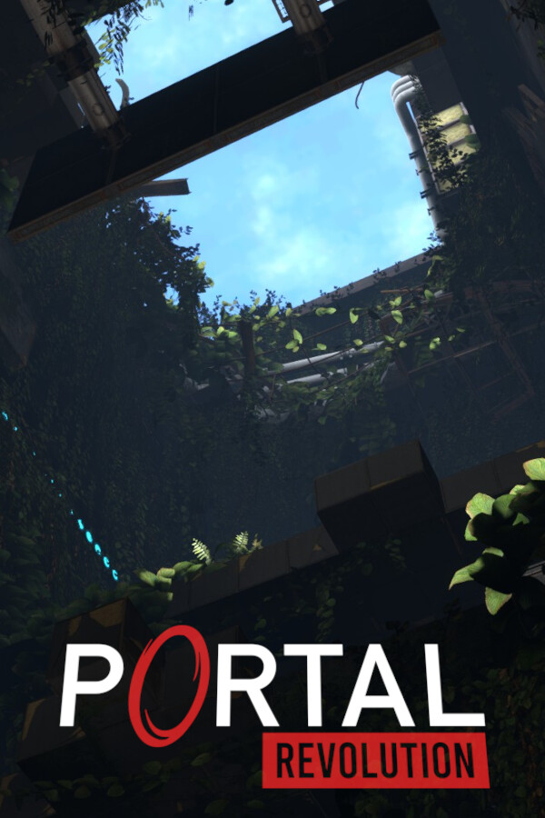

Portal: Revolution
Portal: Revolution
Details
|  | |
| Playtime | Not Played |
| Last Activity | Never |
| Added | 10.01.2024 16:22:04 |
| Modified | 23.11.2024 16:42:22 |
| Completion Status | Not Played |
| Library | Steam |
| Source | Steam |
| Platform | PC (Windows) |
| Release Date | 06.01.2024 |
| Community Score | 91 |
| Critic Score | |
| User Score | |
| Genre | Action Adventure Casual |
| Developer | Second Face Software |
| Publisher | Second Face Software |
| Feature | Achievements Captions Available Cloud Saves Full Controller Support Single Player |
| Links | Steam Official Discord |
| Tag | [HLTB] 05 to 10 hours 3D Bogata fabuła Eksploracja Fizyka Jednoosobowe Klimatyczne Komediowe Kontroler Liniowe Łamigłówki Mod Modyfikowalne Muzyczne Nauka Perspektywa pierwszej osoby Przygodowe akcji Science fiction Sztuczna inteligencja Zabawne Żeńska postać w roli głównej |
Description
Portal: Revolution is a fan-made mod for Portal 2 which plays before the events of Portal 2 in the dead and decaying Aperture facility.

Over 40 new puzzles
The campaign contains 40 brand new puzzles making use of new test elements and presents existing mechanics in a new way not seen in Portal 2.
Difficulty
Portal: Revolutions puzzle difficulty starts where Portal 2 stops, but fear not. All new mechanics and advanced portal tricks are taught to you. We have ensured through rigorous playtesting that every player can solve the puzzles. Although very few chambers require portals to be fired mid-air, no puzzles require advanced tricky movement.
Depending on your experience with Portal 2 mechanics, you can expect about 5 to 7 hours of playtime.

Set inbetween Portal and Portal 2, Portal: Revolution tells a brand new story using new characters. You play as a test subject who is awoken by a personality sphere called Stirling and join his mission to find a powerful device capable of restoring Aperture to its former glory.
This allowed us to introduce many mechanics and improvements to the engine to create an experience which would be impossible in Portal 2.
-----------------------------------
Something you want to say?
Email us: hello@secondfacesoftware.com
Support: support@secondfacesoftware.com
Over 40 new puzzles
The campaign contains 40 brand new puzzles making use of new test elements and presents existing mechanics in a new way not seen in Portal 2.
- Resurrected "Pneumatic Diversity Vent" element
- New laser cube variant
- Over 15 puzzles using only the blue Portal-Gun
- Gel Cleansing Field
Difficulty
Portal: Revolutions puzzle difficulty starts where Portal 2 stops, but fear not. All new mechanics and advanced portal tricks are taught to you. We have ensured through rigorous playtesting that every player can solve the puzzles. Although very few chambers require portals to be fired mid-air, no puzzles require advanced tricky movement.
Depending on your experience with Portal 2 mechanics, you can expect about 5 to 7 hours of playtime.
Set inbetween Portal and Portal 2, Portal: Revolution tells a brand new story using new characters. You play as a test subject who is awoken by a personality sphere called Stirling and join his mission to find a powerful device capable of restoring Aperture to its former glory.
ENGINE
Portal: Revolution uses a modified version of Portal 2: Community Edition's engine, which is a custom version of the Counter-Strike: Global Offensive Source Engine branch using licensed source code provided by Valve Software.This allowed us to introduce many mechanics and improvements to the engine to create an experience which would be impossible in Portal 2.
-----------------------------------
Something you want to say?
Email us: hello@secondfacesoftware.com
Support: support@secondfacesoftware.com